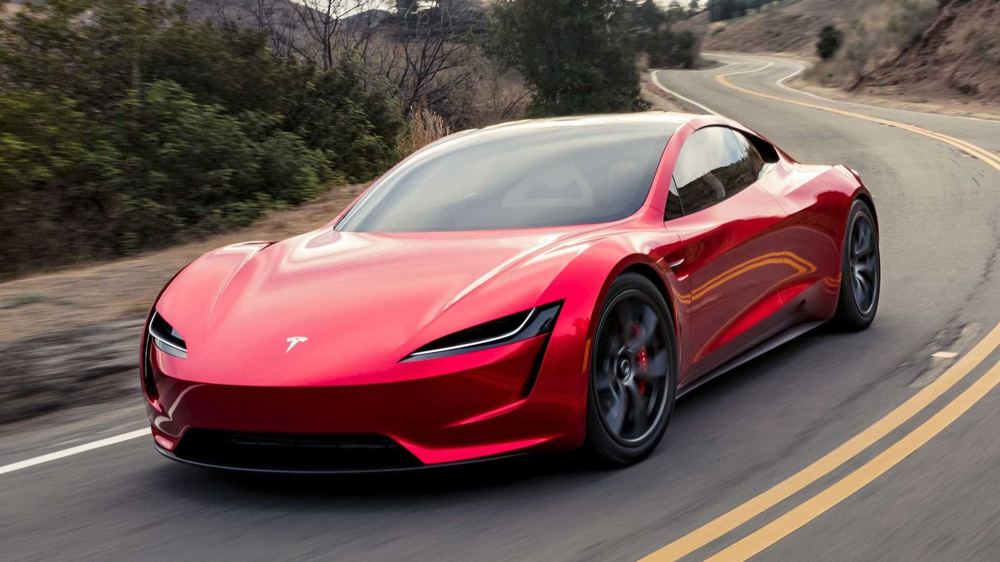

О компании Tesla
{kind=link}
Модельный ряд Tesla
- Tesla Model 3.
- Tesla Model S.
- Tesla Model X.
- Tesla Model Y.
- Tesla Roadster.
- Tesla Cybertruck.
{kind=link}
Tesla Model 3 — самый доступный электрокар в гамме американской компании Tesla.
Автомобиль построен на новой платформе, которая в корне отличается от Model
S и Model X. Обновленная версия компактного седана была представлена в конце 2020 года
Tesla.
{kind=link}
Именно Model S принесла марке Tesla первую мировую славу. Дебютировав в 2013 году, автомобиль продержался с легкими изменениями до 2021 года. В январе компания объявила о глобальном обновлении модели. Оно затронуло как дизайн интерьера и экстерьера, так и техническую часть Tesla Model S.

Model X является самым безопасным, быстрым и наиболее продвинутым SUV (Sport Utility Vehicle) в истории. Автомобиль может взять на борт до семи человек, при этом версия Long Range c полным приводом и 100 кВт/ч батареей обеспечивает 580 км пробега, а разгон до 100км/ч занимает всего 3,9 секунды. Model X Plaid может проехать на одной зарядке до 547 км, а до 100 км/ч разгоняется на сумасшедшие 2,6 секунды.
{kind=link}
Tesla Model Y — это так называемый SUV (Sport utility vehicle), то есть, условно говоря, кроссовер. В целом, под характеристику SUV попадают автомобили, у которых увеличенный дорожный просвет, полный привод и повышенная вместимость. Tesla Model Y построена на платформе Model 3. У них идентичные батареи, двигатели, интерьер. Но Model Y длиннее, выше и тяжелее.

{kind=link}
Tesla Roadster без преувеличения можно назвать самым ожидаемым и амбициозным проектом Илона Маска и компании Tesla. Впервые электрический родстер был представлен публике в 2017 году. Но до сих пор точные сроки запуска в производство неизвестны. А ведь первые клиенты внесли депозиты в размере 50.000$.
{kind=link}
По словам Илона Маска, одной из целей проекта Cybertruck было создание пикапа, непохожего на другие. Отсюда его футуристичный внешний вид, которому могут позавидовать иные концепт-кары. Однако Tesla Cybertruck пойдет в серийное производство практически в неизменном виде.
Вверх